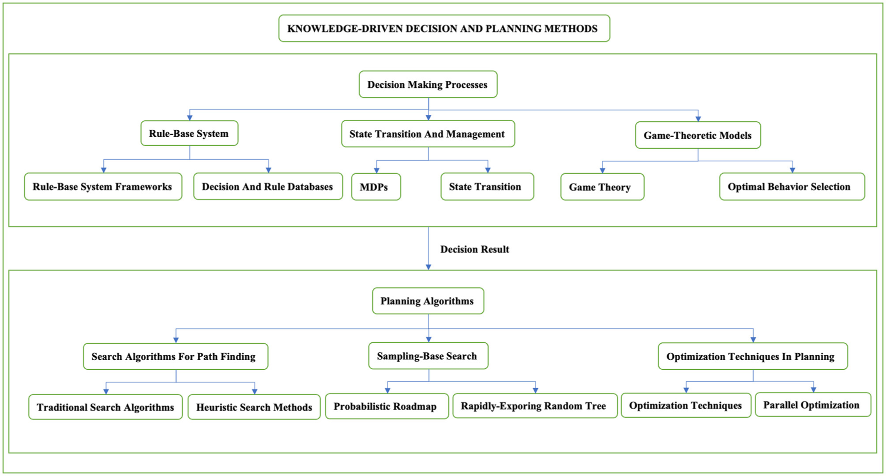

このサーベイ論文は、自動運転車の意思決定とモーションプランニングのアルゴリズムを包括的にレビューし、知識ドリブン・データドリブン・ハイブリッドの三つに分類して整理するものである。各手法の有効性を実験プラットフォームで評価し、現在の課題と今後の研究方向についても論じている。
本論文は自動運転車の意思決定とプランニングアルゴリズムを二つの主要フェーズで整理している。
ルールベースシステムは事前定義された交通ルールと条件ロジックを使用する。専門知識を符号化できるが、過度に保守的で時間計算量が増大しやすい。
状態遷移モデルはマルコフ決定過程（MDP）および部分観測MDP（POMDP）を用い、不確実性下での意思決定を最適化する。
ゲーム理論的アプローチは自動運転をマルチエージェントシステムとして扱い、他の交通参加者の行動を分析・予測して戦略を形成する。
経路プランニングに関する三つの主要カテゴリが整理されている。
行動クローニング（BC）: デモンストレーションから人間の運転を直接模倣するが、未知シナリオへの対応が弱く、長期的な意思決定の考慮が不足する。
逆強化学習（IRL）: 専門家デモンストレーションから報酬関数を推定し、複雑な運転戦略を新環境に適応させる能力を持つ。
GAIL（Generative Adversarial Imitation Learning）: GANと模倣学習を組み合わせ、明示的な報酬関数なしに堅牢な行動モデリングを実現する。
生センサーデータを入力として操舵や加速度を直接出力する深層学習アプローチ。NVIDIAのDAVE-2（3カメラ）や時系列推論のためのLSTMを組み込んだアーキテクチャなどが代表例として挙げられている。
意思決定とプランニングのコンポーネント内でデータドリブンな側面に焦点を当て、オフラインの専門家データセットから学習しながら解釈可能性を維持するアプローチ。
三つの主要な分類が整理されている。
ハイブリッドアプローチは知識ドリブンとデータドリブンの両手法を統合し、ルール遵守と学習適応性の両方を活用する。代表的な例として以下が挙げられている。
これらは適応性を高めつつ安全制約を維持するが、統合の複雑さや学習行動と事前定義ルールの間の潜在的な矛盾という課題も抱えている。
論文は三つの主要データセット・プラットフォームを対象としている。
現在の限界として以下が挙げられている。
今後の研究方向として、マルチセンサーフュージョン技術、行動予測モデル、合成データ生成、継続学習システム、透明性のための説明可能AI（XAI）が挙げられている。
本論文は、ハイブリッド手法が今後の研究における最適な方向性であると結論付けている。データドリブンの柔軟性と知識ドリブンの安全保証を組み合わせることで、複雑な環境への適応性と交通規制・安全基準の遵守のバランスを取った、より柔軟でロバストかつ解釈可能な意思決定プランニングが実現できるとしている。